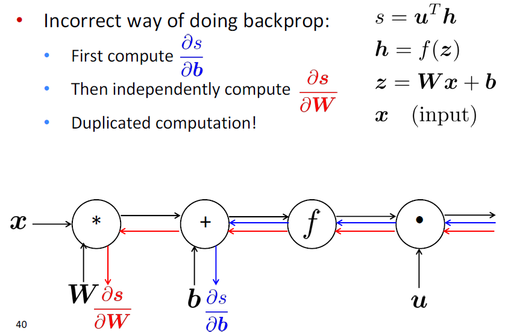

04 Backpropagation and Computation Graphs
Lecture 04 Backpropagation and Computation Graphs¶
Lecture Plan
- Matrix gradients for our simple neural net and some tips
- Computation graphs and backpropagation
-
Stuff you should know
- Regularization to prevent overfitting
- Vectorization
- Nonlinearities
- Initialization
- Optimizers
- Learning rates
1. Derivative wrt a weight matrix¶
- 让我们仔细看看计算 \frac{\partial s}{\partial \textbf{W}}
- 再次使用链式法则

Deriving gradients for backprop
- 这个函数(从上次开始)
- \frac{\partial s}{\partial W}=\delta \frac{\partial \mathbf{z}}{\partial W}=\boldsymbol{\delta} \frac{\partial}{\partial \boldsymbol{W}} \boldsymbol{W} \boldsymbol{x}+\boldsymbol{b}
- 考虑单个权重 W_{ij} 的导数
- W_{ij} 只对 z_i 有贡献
- 例如 W_{23} 只对 z_2 有贡献，对没有 z_1 贡献

- 对于单个 W_{ij} 的导数

- 我们想要整个 W 的梯度，但是每种情况都是一样的
- 总体答案：外积
Deriving gradients: Tips
- 技巧1：仔细定义变量并跟踪它们的维度！
- 技巧2：链式法则！如果 y = f(u) , u = g(x)，即 y = f(g(x)) 则
- \frac{\partial \boldsymbol{y}}{\partial \boldsymbol{x}}=\frac{\partial \boldsymbol{y}}{\partial \boldsymbol{u}} \frac{\partial \boldsymbol{u}}{\partial \boldsymbol{x}}
- 要清楚哪些变量用于哪些计算
- 提示3：模型的最上面的softmax部分：首先考虑当 c = y (正确的类)的导数 f_c ，然后再考虑当 c \neq y (所有不正确的类)的导数 f_c
- 技巧4：如果你被矩阵微积分搞糊涂了，请计算逐个元素的偏导数！
- 技巧5：使用形状约定。注意：到达隐藏层的错误消息 \delta 具有与该隐藏层相同的维度
Deriving gradients wrt words for window model
- 到达并更新单词向量的梯度可以简单地分解为每个单词向量的梯度
- 令 \nabla_{x} J=W^{T} \delta=\delta_{x_{w i n d o w}} ，当 X_{\text { window }}=\left[\begin{array}{llll}{\mathrm{X}_{\text { museums }}} & {\mathrm{X}_{\text { in }}} & {\mathrm{X}_{\text { Paris }}} & {\mathrm{X}_{\text { are }}} & {\mathrm{X}_{\text { amazing }}}\end{array}\right]
- 则得到
我们将根据梯度逐个更新对应的词向量矩阵中的词向量，所以实际上是对词向量矩阵的更新是非常稀疏的
Updating word gradients in window model
- 当我们将梯度更新到词向量中时，这将推动单词向量，使它们(在原则上)在确定命名实体时更有帮助。
- 例如，模型可以了解到，当看到 x_{in} 是中心词之前的单词时，指示中心词是一个 Location
A pitfall when retraining word vectors
- 背景：我们正在训练一个单词电影评论情绪的逻辑回归分类模型。
- 在**训练数据**中，我们有“TV”和“telly”
- 在**测试数据**中我们有“television””
- 预先训练的单词向量有三个相似之处：

- 问题：当我们更新向量时会发生什么
- 回答：
- 那些在**训练数据**中出现的单词会四处移动
- “TV”和“telly”
- **没有包含在训练数据**中的词汇保持原样
- “television”
- 那些在**训练数据**中出现的单词会四处移动

So what should I do?
- 问题：应该使用可用的“预训练”字向量吗？
- 回答：
- 几乎总应该是用
- 他们接受了大量的数据训练，所以他们会知道训练数据中没有的单词，也会知道更多关于训练数据中的单词
- 拥有上亿字的数据吗？好的，随机开始
- 问题：我应该更新(“fine tune”)我自己的单词向量吗？
- 回答：
- 如果你只有一个小的训练数据集，不要训练词向量
- 如果您有一个大型数据集，那么 train = update = fine-tune 词向量到任务可能会更好
Backpropagation
我们几乎已经向你们展示了反向传播
- 求导并使用(广义)链式法则
另一个技巧：在计算较低层的导数时，我们**重用**对较高层计算的导数，以使计算最小化
2. Computation Graphs and Backpropagation¶
我们把神经网络方程表示成一个图
 $$
s = \textbf{u}^T\textbf{h} \
\textbf{h} = f(\textbf{z}) \
\textbf{z} = \textbf{W}\textbf{x}+\textbf{b} \
\textbf{x} \quad \quad (\text{input})
$$
Forward Propagation
$$
s = \textbf{u}^T\textbf{h} \
\textbf{h} = f(\textbf{z}) \
\textbf{z} = \textbf{W}\textbf{x}+\textbf{b} \
\textbf{x} \quad \quad (\text{input})
$$
Forward Propagation
- 源节点：输入
- 内部节点：操作
- 边传递操作的结果
Back Propagation
- 沿着边回传**梯度**
Backpropagation: Single Node

- 节点接收“上游梯度”
- 目标是传递正确的“下游梯度”
- 每个节点都有**局部梯度** local gradient
- 它输出的梯度是与它的输入有关
- [downstream gradient] = [upstream gradient] x [local gradient]
有多个输入的节点呢？
 $$
\textbf{z} = \textbf{W}\textbf{x}
$$
$$
\textbf{z} = \textbf{W}\textbf{x}
$$
- 多个输入 \to 多个局部梯度
An Example
Forward

Backward
 $$
\begin{aligned}
\frac{\partial f}{\partial x} = 2 \
\frac{\partial f}{\partial y} = 3 + 2 = 5 \
\frac{\partial f}{\partial z} = 0
\end{aligned}
$$
Gradients sum at outward branches
$$
\begin{aligned}
\frac{\partial f}{\partial x} = 2 \
\frac{\partial f}{\partial y} = 3 + 2 = 5 \
\frac{\partial f}{\partial z} = 0
\end{aligned}
$$
Gradients sum at outward branches
上图中的 \frac{\partial f}{\partial y} 的梯度的计算
 $$
a = x + y \
b = max(y,z) \
f = ab \
\frac{\partial f}{\partial y} = \frac{\partial f}{\partial a}\frac{\partial a}{\partial y} + \frac{\partial f}{\partial b}\frac{\partial b}{\partial y}
$$
Node Intuitions
$$
a = x + y \
b = max(y,z) \
f = ab \
\frac{\partial f}{\partial y} = \frac{\partial f}{\partial a}\frac{\partial a}{\partial y} + \frac{\partial f}{\partial b}\frac{\partial b}{\partial y}
$$
Node Intuitions
- + “分发” 上游梯度给每个 summand
- max “路由” 上游梯度，将梯度发送到最大的方向
- * “切换”上游梯度
Efficiency: compute all gradients at once
- 不重复计算梯度


Back-Prop in General Computation Graph

- Fprop：按拓扑排序顺序访问节点
- 计算给定父节点的节点的值
- Bprop：
- 初始化输出梯度为 1
- 以相反的顺序方位节点，使用节点的后继的梯度来计算每个节点的梯度
- \{y_1,y_2,\dots,y_n\} 是 x 的后继
- \frac{\partial z}{\partial x} = \sum_{i=1}^n \frac{\partial z}{\partial y_i}\frac{\partial y_i}{\partial x}
- 正确地说，Fprop 和 Bprop 的计算复杂度是一样的
- 一般来说，我们的网络有固定的层结构，所以我们可以使用矩阵和雅可比矩阵
Automatic Differentiation
- 梯度计算可以从 Fprop 的符号表达式中自动推断
- 每个节点类型需要知道如何计算其输出，以及如何在给定其输出的梯度后计算其输入的梯度
- 现代DL框架(Tensorflow, Pytoch)为您做反向传播，但主要是令作者手工计算层/节点的局部导数
Backprop Implementations


为了计算反向传播，我们需要在前向传播时存储一些变量的值

Gradient checking: Numeric Gradient
- 对于 h \approx 1e^{-4} , f^{\prime}(x) \approx \frac{f(x+h)-f(x-h)}{2 h}
- 易于正确实现
- 但近似且非常缓慢
- 必须对模型的每个参数重新计算 f
- 用于检查您的实现
- 在过去我们手写所有东西的时候，在任何地方都这样做是关键。
- 现在，当把图层放在一起时，就不需要那么多了
Summary
- 我们已经掌握了神经网络的核心技术
- 反向传播：沿计算图递归应用链式法则
- [downstream gradient] = [upstream gradient] x [local gradient]
- 前向传递：计算操作结果并保存中间值
- 反向传递：应用链式法则计算梯度
Why learn all these details about gradients?
- 现代深度学习框架为您计算梯度
- 但是，当编译器或系统为您实现时，为什么要学习它们呢？
- 了解引擎盖下发生了什么是有用的
- 反向传播并不总是完美地工作
- 理解为什么对调试和改进模型至关重要
- 参见Karpathy文章 （在教学大纲中）
- 未来课程的例子:爆炸和消失的梯度
3. We have models with many params! Regularization!¶
- 实际上一个完整的损失函数包含了所有参数 \theta 的正则化（下式中最后一项），例如L2正则化：
- 正则化(在很大程度上)可以防止在我们有很多特征时过拟合(或者是一个非常强大/深层的模型等等)

“Vectorization”
- 例如，对单词向量进行循环，而不是将它们全部连接到一个大矩阵中，然后将softmax权值与该矩阵相乘

- 1000 loops, best of 3: 639 μs per loop
-
10000 loops, best of 3: 53.8 μs per loop
-
(10x)更快的方法是使用 C \times N 矩阵
- 总是尝试使用向量和矩阵，而不是循环
- 你也应该快速测试你的代码
- 简单来说：矩阵太棒了
Non-linearities: The starting points

tanh 只是一个重新放缩和移动的 sigmoid (两倍陡峭，[-1,1]) $$ \tanh (z)=2 \operatorname{logistic}(2 z)-1 $$ logistic 和 tanh 仍然被用于特定的用途，但不再是构建深度网络的默认值。
logistic和tanh: 设计复杂的数学运算，指数计算会减慢速度。所以人们提出了 hard tanh，并且效果很不错。于是才有了 ReLU
Non-linearities: The new world order

-
为了建立一个前馈深度网络，你应该做的第一件事是ReLU——由于良好的**梯度回流**，训练速度快，性能好
-
每个单元要么已经死了，要么在传递信息。
- 非零范围内只有一个斜率，这一位置梯度十分有效的传递给了输入，所以模型非常有效的训练
Parameter Initialization
- 通常 必须将权重初始化为小的随机值 （这样才能在激活函数的有效范围内， 即存在梯度可以使其更新）
- 避免对称性妨碍学习/特殊化的
- 初始化隐含层偏差为0，如果权重为0，则输出(或重构)偏差为最优值(例如，均值目标或均值目标的反s形)
- 初始化 所有其他权重 为Uniform(–r, r)，选择使数字既不会太大也不会太小的 r
- Xavier初始化中，方差与 fan-in n_{in} (前一层尺寸)和 fan-out n_{out}(下一层尺寸)成反比
Optimizers
- 通常，简单的SGD就可以了
- 然而，要得到好的结果通常需要手动调整学习速度(下一张幻灯片)
- 对于更复杂的网络和情况，或者只是为了避免担心，更有经验的复杂的
“自适应”优化器通常会令你做得更好，通过累积梯度缩放参数调整。
- 这些模型给出了每个参数的学习速度
- Adagrad
- RMSprop
- Adam \leftarrow 相当好,在许多情况下是安全的选择
- SparseAdam
- …
- 这些模型给出了每个参数的学习速度
Learning Rates
- 你可以用一个固定的学习速度。从lr = 0.001开始？
- 它必须是数量级的——尝试10的幂
- 太大：模型可能会发散或不收敛
- 太小：你的模型可能训练不出很好的效果
- 如果你在训练时降低学习速度，通常可以获得更好的效果
- 手工：每隔 k 个阶段(epoch)将学习速度减半
- epoch = 遍历一次数据 (打乱或采样的)
- 通过一个公式： l r=l r_{0} e^{-k t}, \text{for epoch }t
- 还有更新奇的方法，比如循环学习率(q.v.)
- 手工：每隔 k 个阶段(epoch)将学习速度减半
- 更高级的优化器仍然使用学习率，但它可能是优化器缩小的初始速度——因此可能可以从较高的速度开始
Reference¶
以下是学习本课程时的可用参考书籍：
《基于深度学习的自然语言处理》 （车万翔老师等翻译）
以下是整理笔记的过程中参考的博客：
斯坦福CS224N深度学习自然语言处理2019冬学习笔记目录 (课件核心内容的提炼，并包含作者的见解与建议)
斯坦福大学 CS224n自然语言处理与深度学习笔记汇总 这是针对note部分的翻译